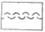
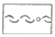
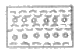
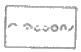

양장기능사 (2010-03-28 기출문제)
1과목: 임의 구분
1. 가봉 시의 일반적인 유의사항이 아닌 것은?
- 칼라, 커프스, 포켓은 먼저 머슬린으로 재단하여 달아보고 치수, 크기, 모양 등이 잘 맞는가 확인한 후에 옷감을 재단하도록 한다.
- 바늘은 옷감에 어슷내려 꽂아 시침한다.
- 단추는 같은 크기의 종이나 천은 잘라서 일정한 위치에 붙여본다.
- 가봉할 옷을 착용하여 전체적인 실루엣을 먼저 관찰하고, 부분적인 곳을 관찰하면서 보정해 나간다.
(정답률: 69%)

2. 일반적으로 가봉 시 이용되는 손바느질은?
- 홈질
- 시침질
- 상침시침
- 박음질
(정답률: 77%)
3. 신장계의 최상부의 지주와 2개의 금속 가로자로 구성되어 있으며 두께, 너비와 같이 두 점간의 직선거리 계측에 이용되는 계측기는?
- 간상계
- 줄자
- 측각계
- 신장계
(정답률: 80%)
4. 바느질 방법에 따른 감도에 대한 설명으로 틀린 것은?
- 바느질 방법의 종류에 따라 그 강도가 달라진다.
- 의복의 바느질 강도에 있어서는 디자인보다 기능적인 면을 생각해야 한다.
- 바느질 방법에 따른 절단강도는 통솔보다는 쌍솔이 크다.
- 바느질에서는 여러 번 박을수록 옷의 실루엣이 곱게 표현되기가 쉽다.
(정답률: 88%)
5. 인체에서 몸의 지주가 되어 가장 기본적인 형태를 만들어 주는 것은?
- 피부
- 피하지방
- 골격
- 근육
(정답률: 89%)
6. 원가계산방법으로 옳은 것은?
- 제조원가=재료비+인건비+판매간접비
- 제조원가=재료비+인건비+제조경비
- 판매가=총원가+인건비
- 판매가=제조원가+이익
(정답률: 83%)
7. 바늘땀을 뒤로 돌아와 한 땀 뜨는 것으로서 손바느질 중에서 가장 튼튼한 바느질 방법은?
- 홈질
- 숨은상침
- 시침질
- 박음질
(정답률: 80%)
8. 라펠, 주름 등의 일정한 면적을 고정시킬 때 사용되는 것으로, 겉으로는 길게 사선으로 나타나며 안으로는 짧은 땅이 나타나는 바느질은?
- 시침질
- 박음질
- 팔자뜨기
- 어슷시침
(정답률: 44%)
9. 다음 중 세트 인 슬리브 형태에 해당되는 것은?
- 기모노 슬리브
- 래귤런 슬리브
- 랜턴 슬리브
- 돌먼 슬리브
(정답률: 79%)
10. 다음 중 플랫(slat) 칼라가 아닌 것은?
- 수티앵(soutien) 칼라
- 피터 팬(peter pan) 칼라
- 세일러(sailor) 칼라
- 롤(rolled) 칼라
(정답률: 77%)
11. 목 뒤에 세워진 부분이 없는 칼라로서 옷을 착용했을 때 어깨선을 따라 평평하게 눕는 칼라는?
- 스탠드(stand) 칼라
- 셔츠(shirt) 칼라
- 숄(showl) 칼라
- 플랫(flat) 칼라
(정답률: 74%)
12. 다음 그림의 제도에 필요한 부호의 의미는?
- 완성선
- 바이어스
- 직각
- 안단선
(정답률: 93%)
13. 옷감의 너비가 110cm일 때 옷감의 필요량 계산법으로 틀린 것은?
- 긴 소매 블라우스=(블라우스 길이×2)+시접(10~15cm)
- 타이트 스커트=(스커트 길이×2)+시접(12~16cm)
- 긴 소매 슈트=재킷 길이+소매 길이+시접(20~30cm)
- 슬랙스=[(슬랙스 길이+시접(8~10cm)]×2
(정답률: 58%)
14. 재봉기의 박음질 기구 중 윗실을 바늘귀로 유도하는 한편 윗실의 장력을 조절하는 것은?
- 바늘대 기구
- 실채기 기구
- 실조절 기구
- 북집 기구
(정답률: 75%)
15. 소매의 앞과 뒤 양쪽으로 군주름이 생기는 이유는?
- 소매산의 높이가 높아서
- 소매 중심점이 앞쪽으로 넘어 와서
- 소매산의 높이가 낮아서
- 소매통이 좁아서
(정답률: 56%)
16. 의복의 시접 중 목둘레와 칼라의 일반적인 시접 분량은?
- 1cm
- 2cm
- 3cm
- 5cm
(정답률: 88%)
17. 연단 방법 중 옷감이 감긴 롤러를 돌려가면서 연단해야 하기 때문에 인력 소모가 가장 큰 것은?
- 표면대향 연단
- 무방향 연단
- 양방향 연단
- 한방향 연단
(정답률: 64%)
18. 다음 제도에 필요한 부호의 의미는?
- 골선
- 주름
- 다트
- 늘림
(정답률: 90%)
19. 뒤 허리 밑에 수평의 주름이 생겨 뒤 허리선을 내려주고, 뒤 다트 길이를 길게 하는 체형은?
- 하복부가 나온 체형
- 엉덩이가 나오고 복부가 들어간 체형
- 엉덩이가 쳐진 체형
- 엉덩이가 나온 체형
(정답률: 84%)
20. 얇은 면직물을 봉제할 때 필요한 재봉바늘의 굵기로 가장 적당한 것은?
- 9호
- 11호
- 14호
- 16호
(정답률: 63%)
2과목: 임의 구분
21. 원피스 드레스 중 반소매의 퍼프 슬리브를 달고, 스커트는 개더 스커트로 하여 귀여운 느낌을 주는 것은?
- 프린세스 라인의 원피스 드레스
- 내추럴 웨이스트의 원피스 드레스
- 로 웨이스트의 원피스 드레스
- 프릴 칼라의 원피스 드레스
(정답률: 59%)
22. 다음 중 시접의 분량이 가장 큰 것은?
- 진동둘레
- 스커트단
- 목둘레
- 허리선
(정답률: 85%)
23. 재봉 시 재봉바늘에 발생하는 열의 원인과 관계없는 것은?
- 재봉바늘 끝부분의 형태
- 재봉기의 회전속도
- 재봉바늘의 굵기
- 천의 두께
(정답률: 58%)
24. 스커트의 실루엣을 정하여 폭으로 등분한 후, 다트를 잘라내어 이어서 만든 스커트는?
- 고어 스커트
- 플리츠 스커트
- 플레어 스커트
- 스트레이트 스커트
(정답률: 69%)
25. 시접은 완전히 감싸는 방법으로 알고 비치거나 풀리기 쉬운 옷감으로 만들 때 이용되는 바느질 방법은?
- 통솔
- 평솔
- 쌍솔
- 뉜솔
(정답률: 71%)
26. 다음 중 재봉기의 밑실이 끊어지는 경우와 가장 상관이 없는 것은?
- 북에 결함이 있다.
- 노루발 압력에 결합이 있다.
- 실 상태에 결합이 있다.
- 바늘판에 결합이 있다.
(정답률: 68%)
27. 한 쪽 방향으로 연속 주름을 스커트 너비에 전체에 넣은 스커트는?
- 세미 타이트 스커트
- 플레어 스커트
- 플리츠 스커트
- 점퍼 스커트
(정답률: 86%)
28. 마틴(R. Martin)식 인체 측정법 중에서 너비와 두께를 측정하는 용구는?
- 신장계
- 줄자
- 간상계
- 측각계
(정답률: 66%)
29. 재단가위에 대한 설명으로 틀린 것은?
- 재단할 때 사용한다.
- 30cm 정도의 크기가 적당하다.
- 가끔 가위에 기름을 치고 손질을 한다.
- 올이 풀리기 쉬운 천의 시접을 처리할 때 사용한다.
(정답률: 86%)
30. 인체계측 방법 중 직접법에 해당되지 않는 것은?
- 마틴식 인체계측기법
- 슬라이딩 게이지법
- 실루에터법
- 퓨즈법
(정답률: 70%)
31. 다음과 그림과 같은 다림질 기호에 대한 설명으로 옳은 것은?
- 다리미의 온도 50℃ 이하로 다림질을 할 수 있다.
- 다리미의 온도 80℃~120℃로 다림질을 할 수 있다.
- 다리미의 온도 140℃~160℃로 다림질을 할 수 있다.
- 다림질을 할 수 없다.
(정답률: 66%)
32. 다음 중 인조 섬유의 제조 과정에서 방사원액에 이산화티탄(TiO2)의 양에 따른 광택의 정도가 약한 것은?
- dull
- fulldull
- semidull
- bright
(정답률: 44%)
33. 다음 중 용융방사로 얻어지는 섬유는?
- 아크릴
- 아세테이트
- 비스코스레이온
- 폴리에스테르
(정답률: 42%)
34. 나일론 섬유가 내의용 옷감으로 적당하지 않는 가장 큰 이유는?
- 구김이 잘 생기기 때문
- 내수성이 강하기 때문
- 습수성이 작기 때문
- 열가고성이 크기 때문
(정답률: 66%)
35. 현미경 측정 시 표면에 겉비늘이 있고 단면이 원형인 섬유는?
- 면
- 견
- 양모
- 아크릴
(정답률: 76%)
36. 합성섬유 중 내일광성이 가장 좋은 섬유는?
- 나일론
- 아크릴
- 폴리에스테르
- 폴리우레탄
(정답률: 79%)
37. 다음 중 천연섬유에 해당되지 않는 것ㅇ느?
- 식물성 섬유
- 동물성 섬유
- 광물성 섬유
- 재생 섬유
(정답률: 85%)
38. 다음 중 면섬유에서 가방성을 주는 것은?
- 천연꼬임
- 매듭
- 중공
- 권축
(정답률: 72%)
39. 다음 섬유 중 표준수분율과 공정수분율이 동일한 것은?
- 면
- 양모
- 나일론
- 폴리에스테르
(정답률: 38%)
40. 다음 중 일광에 의해 가장 심하게 손상되는 섬유는?
- 면
- 양모
- 견
- 아크릴
(정답률: 63%)
3과목: 임의 구분
41. 다음 중 딱딱한 느낌을 주는 색의 톤이 아닌 것은?
- pale
- strong
- dark
- deep
(정답률: 83%)
42. 다음 중 인접색의 조화가 받을 수 있는 효과는?
- 활기찬 시각적인 효과
- 격조 높고 다양한 효과
- 화려하고 원색적인 효과
- 차분하고 안정된 효과
(정답률: 80%)
43. 다음 중 파장의 길이가 가장 긴 색상은?
- 파랑
- 초록
- 노랑
- 빨강
(정답률: 67%)
44. 다음 중 색의 3속성에 해당되지 않는 것은?
- 색상
- 명도
- 톤
- 채도
(정답률: 95%)
45. 좌우의 힘의 균형이 다르거나 위치가 다르더라도 이들을 적절히 배치하여 힘의 균형이 이루어지도록 하는 균형은?
- 방사적 균형
- 수직적 균형
- 대칭 균형
- 대비칭 균형
(정답률: 45%)
46. 감각적인 배색 방법 중 색상환의 연속되는 3가지 색상과 명도는 조절하여 사용하는 배색 방법은?
- 보색 배색
- 동색 배색
- 무채색 배색
- 인접색 배색
(정답률: 74%)
47. 다음 중 추상적 무늬가 가장 적당한 옷은?
- 작업복
- 아동복
- 평상복
- 무대복
(정답률: 80%)
48. 다음 중 가장 연하고 부드러운 느낌을 주는 색으로만 나열된 것은?
- 고동색, 회색
- 분홍색, 하늘색
- 주황, 자주
- 연두색, 파랑
(정답률: 95%)
49. 흰색 바탕에 검정색의 가는 줄무늬 옷감이 멀리서 보면 회색으로 보이는 색채혼합은?
- 색광혼합
- 감법혼합
- 중간혼합
- 색료혼합
(정답률: 55%)
50. 다음 중 2방 연속무늬에 해당되는 것은?




(정답률: 65%)
51. 다음 중 편성물의 보온성에 가장 큰 영향을 미치는 것은?
- 함기성
- 인장성
- 굴곡성
- 마찰성
(정답률: 86%)
52. 의류직물용인 아마섬유의 성능으로 옳은 것은?
- 탄성회복률이 높다.
- 내마모성이 불량하다.
- 산도가 낮고, 흡습성이 높다.
- 광택이 낮으나 촉감은 부드럽다.
(정답률: 65%)
53. 평직의 특징으로 옳은 것은?
- 3원 조직 중 가장 간단한 조직이다.
- 3을 이상의 날실과 씨실로 구성되어 있다.
- 조직점이 적어서 유연하다.
- 광택이 좋고 표면 겉이 고운 작물을 만들 수 있다.
(정답률: 72%)
54. 여름철 의복으로 입기에 가장 적합한 조직과 직물은?
- 변화평직-서지
- 평직-모시
- 능직-개버딘
- 주자직-데님
(정답률: 85%)
55. 승화성이 있는 전사날염에 가장 적합한 염료는?
- 산성염료
- 직접염료
- 분산염료
- 반응성염료
(정답률: 53%)
56. 얇은 직물의 표면을 고무 또는 합성수지 필름으로 피막을 입혀 전혀 누수되지 않고 통기성도 없게 만드는 가공은?
- 방추가공
- 방염가공
- 방오가공
- 방수가공
(정답률: 79%)
57. 피복류의 감각적 성능을 일반적으로 드레이프성이 가장 요구되는 피복은?
- 양말
- 작업복
- 속옷
- 외출복
(정답률: 67%)
58. 직물의 위생적인 성능에서 가장 필요한 성능은?
- 대전성과 함기성
- 흡습성과 투습성
- 내열성과 내연성
- 탄성과 감도
(정답률: 67%)
59. 5매 주자조직의 재직 가능한 띔 수는?
- 2, 3
- 3, 5
- 3, 7
- 5, 7
(정답률: 69%)
60. 의장지에 대한 성명중 틀린 것은?
- 직물의 조직도를 그리기 위한 종이이다.
- 매 8개의 선마다 굵은 선이 그어져 있다.
- 한 네모집 칸은 경사와 위사의 교차점을 나타낸다.
- 경사가 위사 밑으로 들어가는 점을 경계 표시한다.
(정답률: 56%)
설명: 다른 보기들은 가봉 시에 일반적으로 지켜지는 규칙들이지만, 바늘을 옷감에 어슷내려 꽂아 시침하는 것은 재봉할 때 개인적인 기술 차이에 따라 다를 수 있는 부분입니다.